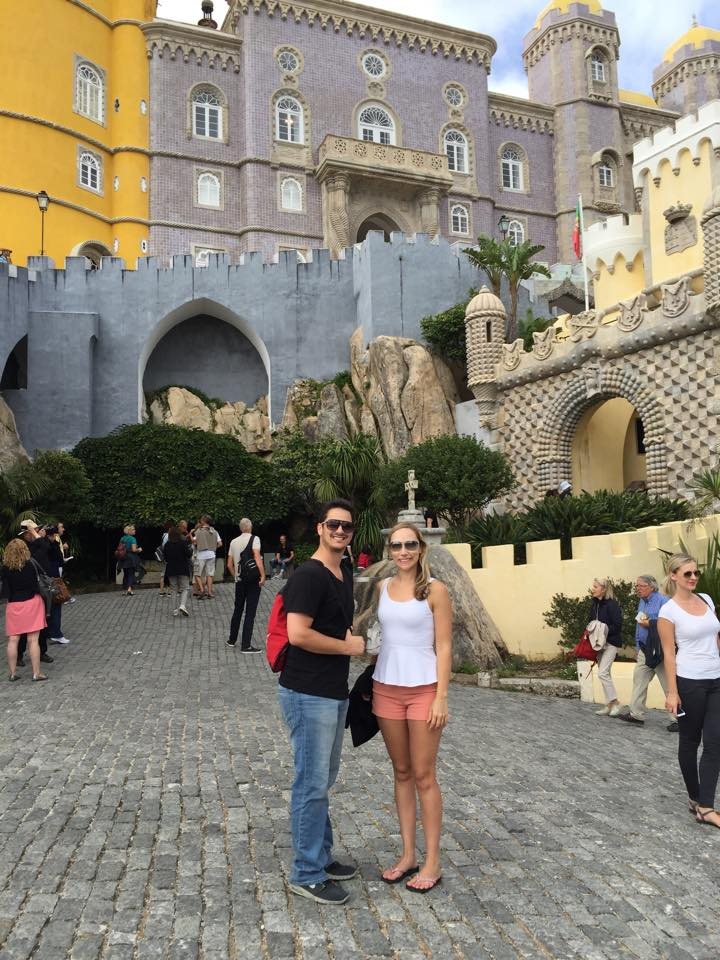
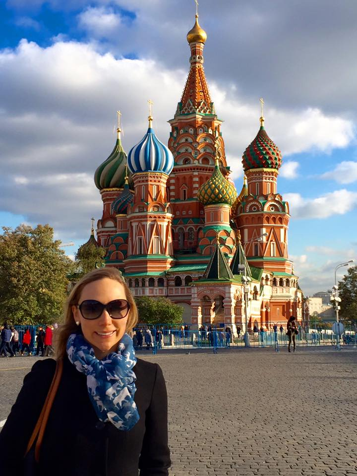
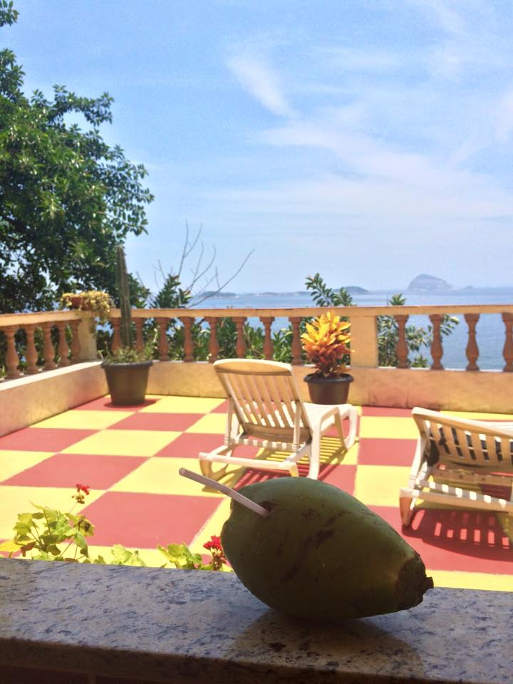
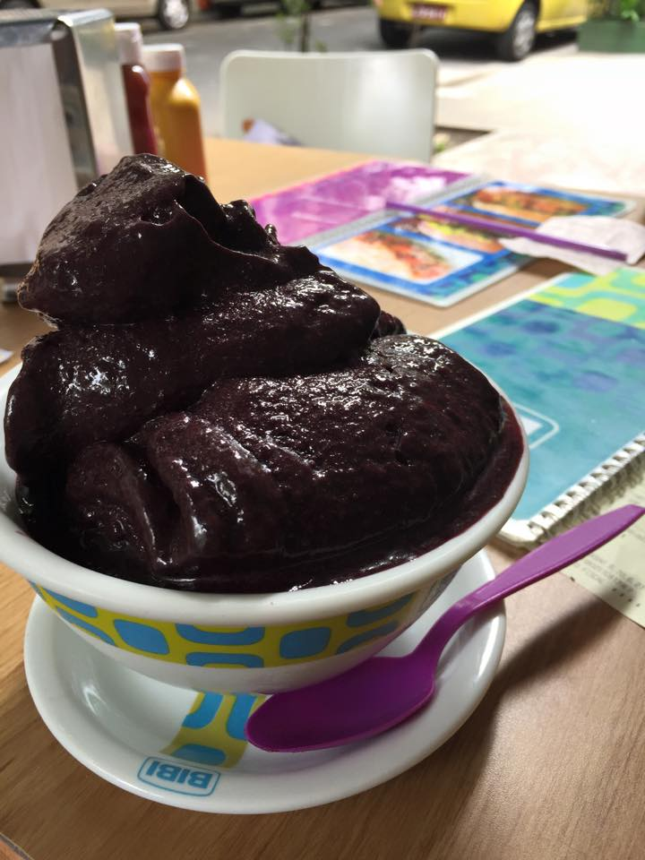

Julie's 2015 Travels
Portugal, Russia, and Brazil
In 2015, Julie's love of international travel took her to three countries:
- Portugal
- Russia
- Brazil
Portugal
Julie and her two siblings took a trip to Southern Portugal for wine tasting and time at the beach in September 2015.

After wine tasting in Southern Portugal, the siblings drove to a beautiful city called Sintra, which is just north of Lisbon. Here, they went to the Sintra Castle which looked like it belonged in a Disney movie.

Russia
Julie and her sister found a $400 round trip flight to Moscow on Singapore air, and randomly booked a trip to Russia in October 2015. They first went to Moscow, followed by St. Petersburg.
After exploring snowy cold Moscow, they took a train to St. Petersburg. St. Petersburg was less "Russian" and more European looking than Moscow.

Brazil
Following tradition, Julie, her sister, and a group of friends spent Christmas and New Years in a warm climate - this time Rio de Janeiro, Brazil. Upon arrival, the Airbnb host had coconuts to drink waiting for us. It was paradise arriving in a warm climate to a cool coconut after a long flight.
One of our favorite foods was an "acai" bowl, which is similar to a smoothie but made with one of Brazil's superfood berries from the Amazon, the acai.
